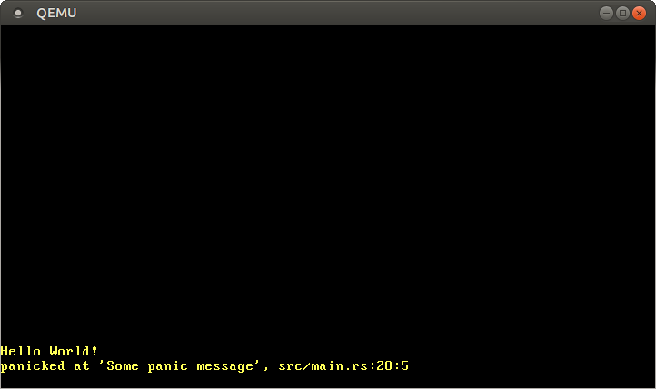

VGAテキストモード
この記事は翻訳されたものです： この記事はVGA Text Modeをコミュニティの手により翻訳したものです。そのため、翻訳が完全・最新でなかったり、原文にない誤りを含んでいる可能性があります。問題があればこのissue上で報告してください！
翻訳者： @woodyZootopia 及び @JohnTitor.
VGAテキストモードは画面にテキストを出力するシンプルな方法です。この記事では、すべてのunsafeな要素を別のモジュールにカプセル化することで、それを安全かつシンプルに扱えるようにするインターフェースを作ります。また、Rustのフォーマッティングマクロのサポートも実装します。
このブログの内容は GitHub 上で公開・開発されています。何か問題や質問などがあれば issue をたててください (訳注: リンクは原文(英語)のものになります)。またこちらにコメントを残すこともできます。この記事の完全なソースコードはpost-03 ブランチにあります。
目次
🔗VGAテキストバッファ
VGAテキストモードにおいて、文字を画面に出力するには、VGAハードウェアのテキストバッファにそれを書き込まないといけません。VGAテキストバッファは、普通25行と80列からなる2次元配列で、画面に直接書き出されます。それぞれの配列の要素は画面上の一つの文字を以下の形式で表現しています：
| ビット | 値 |
|---|---|
| 0-7 | ASCII コードポイント |
| 8-11 | フォアグラウンド（前景）色 |
| 12-14 | バックグラウンド（背景）色 |
| 15 | 点滅 |
最初の1バイトは、出力されるべき文字をASCIIエンコーディングで表します。正確に言うと、完全にASCIIではなく、コードページ437という、いくつか文字が追加され、軽微な修正のなされたものです。簡単のため、この記事ではASCII文字と呼ぶことにします。
2つ目のバイトはその文字がどのように出力されるのかを定義します。最初の4ビットが前景色（訳注：文字自体の色）を、次の3ビットが背景色を、最後のビットがその文字が点滅するのかを決めます。以下の色を使うことができます：
| 数字 | 色 | 数字 + Bright Bit | Bright 色 |
|---|---|---|---|
| 0x0 | 黒 | 0x8 | 暗いグレー |
| 0x1 | 青 | 0x9 | 明るい青 |
| 0x2 | 緑 | 0xa | 明るい緑 |
| 0x3 | シアン | 0xb | 明るいシアン |
| 0x4 | 赤 | 0xc | 明るい赤 |
| 0x5 | マゼンタ | 0xd | ピンク |
| 0x6 | 茶色 | 0xe | 黄色 |
| 0x7 | 明るいグレー | 0xf | 白 |
4ビット目は bright bit で、これは（1になっているとき）たとえば青を明るい青に変えます。背景色については、このビットは点滅ビットとして再利用されています。
VGAテキストバッファはアドレス0xb8000にmemory-mapped I/Oを通じてアクセスできます。これは、このアドレスへの読み書きをしても、RAMではなく直接VGAハードウェアのテキストバッファにアクセスするということを意味します。つまり、このアドレスに対する通常のメモリ操作を通じて、テキストバッファを読み書きできるのです。
メモリマップされたハードウェアは通常のRAM操作すべてをサポートしてはいないかもしれないということに注意してください。たとえば、デバイスはバイトずつの読み取りしかサポートしておらず、u64が読まれるとゴミデータを返すかもしれません。ありがたいことに、テキストバッファを特別なやり方で取り扱う必要がないよう、テキストバッファは通常の読み書きをサポートしています。
🔗Rustのモジュール
VGAバッファが動く仕組みを学んだので、さっそく画面出力を扱うRustのモジュールを作っていきます。
// in src/main.rs
mod vga_buffer;
このモジュールの中身のために、新しいsrc/vga_buffer.rsというファイルを作ります。このファイル以下のコードは、（そうならないよう指定されない限り）すべてこの新しいモジュールの中に入ります。
🔗色
まず、様々な色をenumを使って表しましょう：
// in src/vga_buffer.rs
#[allow(dead_code)]
#[derive(Debug, Clone, Copy, PartialEq, Eq)]
#[repr(u8)]
pub enum Color {
Black = 0,
Blue = 1,
Green = 2,
Cyan = 3,
Red = 4,
Magenta = 5,
Brown = 6,
LightGray = 7,
DarkGray = 8,
LightBlue = 9,
LightGreen = 10,
LightCyan = 11,
LightRed = 12,
Pink = 13,
Yellow = 14,
White = 15,
}
ここでは、それぞれの色の数を指定するのにC言語ライクなenumを使っています。repr(u8)属性のため、それぞれのenumのヴァリアントはu8として格納されています。実際には4ビットでも十分なのですが、Rustにはu4型はありませんので。
通常、コンパイラは使われていないヴァリアントそれぞれに対して警告を発します。#[allow(dead_code)]属性を使うことでColor enumに対するそれらの警告を消すことができます。
Copy、Clone、Debug、PartialEq、および Eqをderiveすることによって、この型のコピーセマンティクスを有効化し、この型を出力することと比較することを可能にします。
前景と背景の色を指定する完全なカラーコードを表現するために、u8の上にニュータイプを作ります。
// in src/vga_buffer.rs
#[derive(Debug, Clone, Copy, PartialEq, Eq)]
#[repr(transparent)]
struct ColorCode(u8);
impl ColorCode {
fn new(foreground: Color, background: Color) -> ColorCode {
ColorCode((background as u8) << 4 | (foreground as u8))
}
}
ColorCode構造体は前景色と背景色を持つので、完全なカラーコードを持ちます。前と同じように、CopyとDebugトレイトをこれにderiveします。ColorCodeがu8と全く同じデータ構造を持つようにするために、repr(transparent)属性（訳注：翻訳当時、リンク先未訳）を使います。
🔗テキストバッファ
次に、画面上の文字とテキストバッファをそれぞれ表す構造体を追加していきます。
// in src/vga_buffer.rs
#[derive(Debug, Clone, Copy, PartialEq, Eq)]
#[repr(C)]
struct ScreenChar {
ascii_character: u8,
color_code: ColorCode,
}
const BUFFER_HEIGHT: usize = 25;
const BUFFER_WIDTH: usize = 80;
#[repr(transparent)]
struct Buffer {
chars: [[ScreenChar; BUFFER_WIDTH]; BUFFER_HEIGHT],
}
Rustにおいて、デフォルトの構造体におけるフィールドの並べ方は未定義なので、repr(C)属性が必要になります。これは、構造体のフィールドがCの構造体と全く同じように並べられることを保証してくれるので、フィールドの並べ方が正しいと保証してくれるのです。Buffer構造体については、repr(transparent)をもう一度使うことで、その唯一のフィールドと同じメモリレイアウトを持つようにしています。
実際に画面に書き出すため、writer型を作ります。
// in src/vga_buffer.rs
pub struct Writer {
column_position: usize,
color_code: ColorCode,
buffer: &'static mut Buffer,
}
writerは常に最後の行に書き、行が一杯になったとき（もしくは\nを受け取った時）は1行上に送ります。column_positionフィールドは、最後の行における現在の位置を持ちます。現在の前景および背景色はcolor_codeによって指定されており、VGAバッファへの参照はbufferに格納されています。ここで、コンパイラにどのくらいの間参照が有効であるのかを教えるために明示的なライフタイムが必要になることに注意してください。'staticライフタイムは、その参照がプログラムの実行中ずっと有効であることを指定しています（これはVGAバッファについて正しいです）。
🔗出力する
ではWriterを使ってバッファの文字を変更しましょう。まず一つのASCII文字を書くメソッドを作ります：
// in src/vga_buffer.rs
impl Writer {
pub fn write_byte(&mut self, byte: u8) {
match byte {
b'\n' => self.new_line(),
byte => {
if self.column_position >= BUFFER_WIDTH {
self.new_line();
}
let row = BUFFER_HEIGHT - 1;
let col = self.column_position;
let color_code = self.color_code;
self.buffer.chars[row][col] = ScreenChar {
ascii_character: byte,
color_code,
};
self.column_position += 1;
}
}
}
fn new_line(&mut self) {/* TODO */}
}
（引数の）バイトが改行コードのバイトすなわち\nの場合は、writerは何も出力しません。代わりに、あとで実装するnew_lineメソッドを呼びます。他のバイトは、2つ目のマッチケースにおいて画面に出力されます。
バイトを出力する時、writerは現在の行がいっぱいかをチェックします。その場合、行を折り返すために先にnew_lineの呼び出しが必要です。その後で現在の場所のバッファに新しいScreenCharを書き込みます。最後に、現在の列の位置を進めます。
文字列全体を出力するには、バイト列に変換しひとつひとつ出力すればよいです：
// in src/vga_buffer.rs
impl Writer {
pub fn write_string(&mut self, s: &str) {
for byte in s.bytes() {
match byte {
// 出力可能なASCIIバイトか、改行コード
0x20..=0x7e | b'\n' => self.write_byte(byte),
// 出力可能なASCIIバイトではない
_ => self.write_byte(0xfe),
}
}
}
}
VGAテキストバッファはASCIIおよびコードページ437にある追加のバイトのみをサポートしています。Rustの文字列はデフォルトではUTF-8なのでVGAテキストバッファにはサポートされていないバイトを含んでいる可能性があります。matchを使って出力可能なASCIIバイト（改行コードか、空白文字から~文字の間のすべての文字）と出力不可能なバイトを分けています。出力不可能なバイトについては、文字■を出力します（これはVGAハードウェアにおいて16進コード0xfeを持っています）。
🔗やってみよう！
適当な文字を画面に書き出すために、一時的に使う関数を作ってみましょう。
// in src/vga_buffer.rs
pub fn print_something() {
let mut writer = Writer {
column_position: 0,
color_code: ColorCode::new(Color::Yellow, Color::Black),
buffer: unsafe { &mut *(0xb8000 as *mut Buffer) },
};
writer.write_byte(b'H');
writer.write_string("ello ");
writer.write_string("Wörld!");
}
この関数はまず、VGAバッファの0xb8000を指す新しいwriterを作ります。このための構文はやや奇妙に思われるかもしれません：まず、整数0xb8000を可変な生ポインタにキャストします。次にこれを（*を使って）参照外しすることで可変な参照に変え、即座にそれを（&mutを使って）再び借用します。コンパイラはこの生ポインタが有効であることを保証できないので、この変換にはunsafeブロックが必要となります。
つぎに、この関数はそれにバイトb'H'を書きます。bというプレフィックスは、ASCII文字を表すバイトリテラルを作ります。文字列"ello "と"Wörld!"を書くことで、私達のwrite_string関数と出力不可能な文字の処理をテストできます。出力を見るためには、print_something関数を_start関数から呼び出さなければなりません：
// in src/main.rs
#[no_mangle]
pub extern "C" fn _start() -> ! {
vga_buffer::print_something();
loop {}
}
ここで、私達のプロジェクトを実行したら、Hello W■■rld!が画面の左 下 に黄色で出力されるはずです。

öは2つの■という文字として出力されていることに注目してください。これは、öはUTF-8において2つのバイトで表され、それらはどちらも出力可能なASCIIの範囲に収まっていないためです。実は、これはUTF-8の基本的な特性です：マルチバイト値のそれぞれのバイトは、絶対に有効なASCIIではないのです。
🔗Volatile
メッセージが正しく出力されるのを確認できました。しかし、より強力に最適化をする将来のRustコンパイラでは、これはうまく行かないかもしれません。
問題なのは、私達はBufferに書き込むけれども、それから読み取ることはないということです。コンパイラは私達が実際には（通常のRAMの代わりに）VGAバッファメモリにアクセスしていることを知らないので、文字が画面に出力されるという副作用も全く知りません。なので、それらの書き込みは不要で省略可能と判断するかもしれません。この誤った最適化を回避するためには、それらの書き込みを volatile であると指定する必要があります。これは、この書き込みには副作用があり、最適化により取り除かれるべきではないとコンパイラに命令します。
VGAバッファへのvolatileな書き込みをするために、volatileライブラリを使います。この クレート（Rustではパッケージのことをこう呼びます）は、readとwriteというメソッドを持つVolatileというラッパー型を提供します。これらのメソッドは、内部的にcoreライブラリのread_volatileとwrite_volatile関数を使い、読み込み・書き込みが最適化により取り除かれないことを保証します。
Cargo.tomlのdependenciesセクションにvolatileクレートを追加することで、このクレートへの依存関係を追加できます。
# in Cargo.toml
[dependencies]
volatile = "0.2.6"
0.2.6はセマンティックバージョン番号です。詳しくは、cargoドキュメントの依存関係の指定を見てください。
これを使って、VGAバッファへの書き込みをvolatileにしてみましょう。Buffer型を以下のように変更します：
// in src/vga_buffer.rs
use volatile::Volatile;
struct Buffer {
chars: [[Volatile<ScreenChar>; BUFFER_WIDTH]; BUFFER_HEIGHT],
}
ScreenCharの代わりに、Volatile<ScreenChar>を使っています（Volatile型はジェネリックであり（ほぼ）すべての型をラップできます）。これにより、間違って「普通の」書き込みをこれに対して行わないようにできます。これからは、代わりにwriteメソッドを使わなければいけません。
つまり、Writer::write_byteメソッドを更新しなければいけません：
// in src/vga_buffer.rs
impl Writer {
pub fn write_byte(&mut self, byte: u8) {
match byte {
b'\n' => self.new_line(),
byte => {
...
self.buffer.chars[row][col].write(ScreenChar {
ascii_character: byte,
color_code,
});
...
}
}
}
...
}
=を使った通常の代入の代わりにwriteメソッドを使っています。これにより、コンパイラがこの書き込みを最適化して取り除いてしまわないことが保証されます。
🔗フォーマットマクロ
Rustのフォーマットマクロもサポートすると良さそうです。そうすると、整数や浮動小数点数といった様々な型を簡単に出力できます。それらをサポートするためには、core::fmt::Writeトレイトを実装する必要があります。このトレイトに必要なメソッドはwrite_strだけです。これは私達のwrite_stringによく似ており、戻り値の型がfmt::Resultであるだけです：
// in src/vga_buffer.rs
use core::fmt;
impl fmt::Write for Writer {
fn write_str(&mut self, s: &str) -> fmt::Result {
self.write_string(s);
Ok(())
}
}
Ok(())は、()型を持つOk、というだけです。
Rustの組み込みのwrite!/writeln!フォーマットマクロが使えるようになりました。
// in src/vga_buffer.rs
pub fn print_something() {
use core::fmt::Write;
let mut writer = Writer {
column_position: 0,
color_code: ColorCode::new(Color::Yellow, Color::Black),
buffer: unsafe { &mut *(0xb8000 as *mut Buffer) },
};
writer.write_byte(b'H');
writer.write_string("ello! ");
write!(writer, "The numbers are {} and {}", 42, 1.0/3.0).unwrap();
}
このようにすると、画面の下端にHello! The numbers are 42 and 0.3333333333333333が見えるはずです。write!の呼び出しはResultを返し、これは放置されると警告を出すので、unwrap関数（エラーの際パニックします）をこれに呼び出しています。VGAバッファへの書き込みは絶対に失敗しないので、この場合これは問題ではありません。
🔗改行
現在、改行や、行に収まらない文字は無視しています。その代わりに、すべての文字を一行上に持っていき（一番上の行は消去されます）、前の行の最初から始めるようにしたいです。これをするために、Writerのnew_lineというメソッドの実装を追加します。
// in src/vga_buffer.rs
impl Writer {
fn new_line(&mut self) {
for row in 1..BUFFER_HEIGHT {
for col in 0..BUFFER_WIDTH {
let character = self.buffer.chars[row][col].read();
self.buffer.chars[row - 1][col].write(character);
}
}
self.clear_row(BUFFER_HEIGHT - 1);
self.column_position = 0;
}
fn clear_row(&mut self, row: usize) {/* TODO */}
}
すべての画面の文字をイテレートし、それぞれの文字を一行上に動かします。範囲記法 (..) は上端を含まないことに注意してください。また、0行目はシフトしたら画面から除かれるので、この行についても省いています（最初の範囲は1から始まっています）。
newlineのプログラムを完成させるには、clear_rowメソッドを追加すればよいです：
// in src/vga_buffer.rs
impl Writer {
fn clear_row(&mut self, row: usize) {
let blank = ScreenChar {
ascii_character: b' ',
color_code: self.color_code,
};
for col in 0..BUFFER_WIDTH {
self.buffer.chars[row][col].write(blank);
}
}
}
このメソッドはすべての文字を空白文字で書き換えることによって行をクリアしてくれます。
🔗大域的なインターフェース
Writerのインスタンスを動かさずとも他のモジュールからインターフェースとして使える、大域的なwriterを提供するために、静的なWRITERを作りましょう：
// in src/vga_buffer.rs
pub static WRITER: Writer = Writer {
column_position: 0,
color_code: ColorCode::new(Color::Yellow, Color::Black),
buffer: unsafe { &mut *(0xb8000 as *mut Buffer) },
};
しかし、これをコンパイルしようとすると、次のエラーが起こります：
error[E0015]: calls in statics are limited to constant functions, tuple structs and tuple variants
（エラー[E0015]: static内における呼び出しは、定数関数、タプル構造体、タプルヴァリアントに限定されています）
--> src/vga_buffer.rs:7:17
|
7 | color_code: ColorCode::new(Color::Yellow, Color::Black),
| ^^^^^^^^^^^^^^^^^^^^^^^^^^^^^^^^^^^^^^^^^^^
error[E0396]: raw pointers cannot be dereferenced in statics
（エラー[E0396]: 生ポインタはstatic内では参照外しできません）
--> src/vga_buffer.rs:8:22
|
8 | buffer: unsafe { &mut *(0xb8000 as *mut Buffer) },
| ^^^^^^^^^^^^^^^^^^^^^^^^^^^^^^ dereference of raw pointer in constant
| （定数内での生ポインタの参照外し）
error[E0017]: references in statics may only refer to immutable values
（エラー[E0017]: static内における参照が参照してよいのは不変変数だけです）
--> src/vga_buffer.rs:8:22
|
8 | buffer: unsafe { &mut *(0xb8000 as *mut Buffer) },
| ^^^^^^^^^^^^^^^^^^^^^^^^^^^^^^ statics require immutable values
| （staticは不変変数を必要とします）
error[E0017]: references in statics may only refer to immutable values
（エラー[E0017]: static内における参照が参照してよいのは不変変数だけです）
--> src/vga_buffer.rs:8:13
|
8 | buffer: unsafe { &mut *(0xb8000 as *mut Buffer) },
| ^^^^^^^^^^^^^^^^^^^^^^^^^^^^^^^^^^^^^^^^^ statics require immutable values
| （staticは不変変数を必要とします）
何が起こっているかを理解するには、実行時に初期化される通常の変数とは対照的に、静的変数はコンパイル時に初期化されるということを知らないといけません。この初期化表現を評価するRustコンパイラのコンポーネントを“const evaluator“といいます。この機能はまだ限定的ですが、「定数内でpanicできるようにする」RFCのように、この機能を拡張する作業が現在も進行しています。
ColorCode::newに関する問題はconst関数を使って解決できるかもしれませんが、ここでの根本的な問題は、Rustのconst evaluatorがコンパイル時に生ポインタを参照へと変えることができないということです。いつかうまく行くようになるのかもしれませんが、その時までは、別の方法を行わなければなりません。
🔗怠けた静的変数
定数でない関数で一度だけ静的変数を初期化したい、というのはRustにおいてよくある問題です。嬉しいことに、lazy_staticというクレートにすでに良い解決方法が存在します。このクレートは、初期化が後回しにされるstaticを定義するlazy_static!マクロを提供します。その値をコンパイル時に計算する代わりに、このstaticは最初にアクセスされたときに初めて初期化します。したがって、初期化は実行時に起こるので、どんなに複雑な初期化プログラムも可能ということです。
訳注: lazyは、普通「遅延（評価）」などと訳されます。「怠けているので、アクセスされるギリギリまで評価されない」という英語のイメージを伝えたかったので上のように訳してみました。
私達のプロジェクトにlazy_staticクレートを追加しましょう：
# in Cargo.toml
[dependencies.lazy_static]
version = "1.0"
features = ["spin_no_std"]
標準ライブラリをリンクしないので、spin_no_std機能が必要です。
lazy_staticを使えば、静的なWRITERが問題なく定義できます：
// in src/vga_buffer.rs
use lazy_static::lazy_static;
lazy_static! {
pub static ref WRITER: Writer = Writer {
column_position: 0,
color_code: ColorCode::new(Color::Yellow, Color::Black),
buffer: unsafe { &mut *(0xb8000 as *mut Buffer) },
};
}
しかし、このWRITERは不変なので、全く使い物になりません。なぜならこれは、このWRITERに何も書き込めないということを意味するからです（私達のすべての書き込みメソッドは&mut selfを取るからです）。ひとつの解決策には、可変で静的な変数を使うということがあります。しかし、そうすると、あらゆる読み書きが容易にデータ競合やその他の良くないことを引き起こしてしまうので、それらがすべてunsafeになってしまいます。static mutを使うことも、それを削除しようという提案すらあることを考えると、できる限り避けたいです。しかし他に方法はあるのでしょうか？不変静的変数をRefCellや、果てはUnsafeCellのような、内部可変性を提供するcell型と一緒に使うという事も考えられます。しかし、それらの型は（ちゃんとした理由があって）Syncではないので、静的変数で使うことはできません。
🔗スピンロック
同期された内部可変性を得るためには、標準ライブラリを使えるならMutexを使うことができます。これは、リソースがすでにロックされていた場合、スレッドをブロックすることにより相互排他性を提供します。しかし、私達の初歩的なカーネルにはブロックの機能はもちろんのこと、スレッドの概念すらないので、これも使うことはできません。しかし、コンピュータサイエンスの世界には、OSを必要としない非常に単純なmutexが存在するのです：それがスピンロックです。スピンロックを使うと、ブロックする代わりに、スレッドは単純にリソースを何度も何度もロックしようとすることで、mutexが開放されるまでの間CPU時間を使い尽くします。
スピンロックによるmutexを使うには、spinクレートへの依存を追加すればよいです：
# in Cargo.toml
[dependencies]
spin = "0.5.2"
すると、スピンを使ったMutexを使うことができ、静的なWRITERに安全な内部可変性を追加できます。
// in src/vga_buffer.rs
use spin::Mutex;
...
lazy_static! {
pub static ref WRITER: Mutex<Writer> = Mutex::new(Writer {
column_position: 0,
color_code: ColorCode::new(Color::Yellow, Color::Black),
buffer: unsafe { &mut *(0xb8000 as *mut Buffer) },
});
}
print_something関数を消して、_start関数から直接出力しましょう：
// in src/main.rs
#[no_mangle]
pub extern "C" fn _start() -> ! {
use core::fmt::Write;
vga_buffer::WRITER.lock().write_str("Hello again").unwrap();
write!(vga_buffer::WRITER.lock(), ", some numbers: {} {}", 42, 1.337).unwrap();
loop {}
}
fmt::Writeトレイトの関数を使うためには、このトレイトをインポートする必要があります。
🔗安全性
コードにはunsafeブロックが一つ（0xb8000を指す参照Bufferを作るために必要なもの）しかないことに注目してください。その後は、すべての命令が安全です。Rustは配列アクセスにはデフォルトで境界チェックを行うので、間違ってバッファの外に書き込んでしまうことはありえません。よって、必要とされる条件を型システムにすべて組み込んだので、安全なインターフェースを外部に提供できます。
🔗printlnマクロ
大域的なwriterを手に入れたので、プログラムのどこでも使えるprintlnマクロを追加できます。Rustのマクロの構文はすこしややこしいので、一からマクロを書くことはしません。代わりに、標準ライブラリでprintln!マクロのソースを見てみます：
#[macro_export]
macro_rules! println {
() => (print!("\n"));
($($arg:tt)*) => (print!("{}\n", format_args!($($arg)*)));
}
マクロは1つ以上のルールを使って定義されます（matchアームと似ていますね）。printlnには2つのルールがあります：1つ目は引数なし呼び出し（例えば println!()）のためのもので、これはprint!("\n")に展開され、よってただ改行を出力するだけになります。2つ目のルールはパラメータ付きの呼び出し（例えばprintln!("Hello")や println!("Number: {}", 4)）のためのものです。これもprint!マクロの呼び出しへと展開され、すべての引数に加え、改行\nを最後に追加して渡します。
#[macro_export]属性はマクロを（その定義されたモジュールだけではなく）クレート全体および外部クレートで使えるようにします。また、これはマクロをクレートルートに置くため、std::macros::printlnの代わりにuse std::printlnを使ってマクロをインポートしないといけないということを意味します。
print!マクロは以下のように定義されています：
#[macro_export]
macro_rules! print {
($($arg:tt)*) => ($crate::io::_print(format_args!($($arg)*)));
}
このマクロはioモジュール内の_print関数の呼び出しへと展開しています。$crateという変数は、他のクレートで使われた際、stdへと展開することによって、マクロがstdクレートの外側で使われたとしてもうまく動くようにしてくれます。
format_argsマクロが与えられた引数からfmt::Arguments型を作り、これが_printへと渡されています。libstdの[_print関数]はprint_toを呼び出すのですが、これは様々なStdoutデバイスをサポートいているためかなり煩雑です。ここではただVGAバッファに出力したいだけなので、そのような煩雑な実装は必要ありません。
VGAバッファに出力するには、println!マクロとprint!マクロをコピーし、独自の_print関数を使うように修正してやればいいです：
// in src/vga_buffer.rs
#[macro_export]
macro_rules! print {
($($arg:tt)*) => ($crate::vga_buffer::_print(format_args!($($arg)*)));
}
#[macro_export]
macro_rules! println {
() => ($crate::print!("\n"));
($($arg:tt)*) => ($crate::print!("{}\n", format_args!($($arg)*)));
}
#[doc(hidden)]
pub fn _print(args: fmt::Arguments) {
use core::fmt::Write;
WRITER.lock().write_fmt(args).unwrap();
}
元のprintlnの定義と異なり、print!マクロの呼び出しにも$crateをつけるようにしています。これにより、printlnだけを使いたいと思ったらprint!マクロもインポートしなくていいようになります。
標準ライブラリのように、#[macro_export]属性を両方のマクロに与え、クレートのどこでも使えるようにします。このようにすると、マクロはクレートの名前空間のルートに置かれるので、use crate::vga_buffer::printlnとしてインポートするとうまく行かないことに注意してください。代わりに、 use crate::printlnとしなければいけません。
_print関数は静的なWRITERをロックし、そのwrite_fmtメソッドを呼び出します。このメソッドはWriteトレイトのものなので、このトレイトもインポートしないといけません。最後に追加したunwrap()は、画面出力がうまく行かなかったときパニックします。しかし、write_strは常にOkを返すようにしているので、これは起きないはずです。
マクロは_printをモジュールの外側から呼び出せる必要があるので、この関数は公開されていなければなりません。しかし、これは非公開の実装の詳細であると考え、doc(hidden)属性をつけることで、生成されたドキュメントから隠すようにします。
🔗printlnを使ってHello World
こうすることで、_start関数でprintlnを使えるようになります：
// in src/main.rs
#[no_mangle]
pub extern "C" fn _start() {
println!("Hello World{}", "!");
loop {}
}
マクロはすでに名前空間のルートにいるので、main関数内でマクロをインポートしなくても良いということに注意してください。
期待通り、画面に Hello World! と出ています：

🔗パニックメッセージを出力する
printlnマクロを手に入れたので、これを私達のパニック関数で使って、パニックメッセージとパニックの場所を出力させることができます：
// in main.rs
/// この関数はパニック時に呼ばれる。
#[panic_handler]
fn panic(info: &PanicInfo) -> ! {
println!("{}", info);
loop {}
}
panic!("Some panic message");という文を_start関数に書くと、次の出力を得ます：

つまり、パニックが起こったということだけでなく、パニックメッセージとそれがコードのどこで起こったかまで知ることができます。
🔗まとめ
この記事では、VGAテキストバッファの構造と、どのようにすれば0xb8000番地におけるメモリマッピングを通じてそれに書き込みを行えるかを学びました。このメモリマップされたバッファへの書き込みというunsafeな操作をカプセル化し、安全で便利なインターフェースを外部に提供するRustモジュールを作りました。
また、cargoのおかげでサードパーティのライブラリへの依存関係を簡単に追加できることも分かりました。lazy_staticとspinという2つの依存先は、OS開発においてとても便利であり、今後の記事においても使っていきます。
🔗次は？
次の記事ではRustに組み込まれている単体テストフレームワークをセットアップする方法を説明します。その後、この記事のVGAバッファモジュールに対する基本的な単体テストを作ります。
コメント
Do you have a problem, want to share feedback, or discuss further ideas? Feel free to leave a comment here! Please stick to English and follow Rust's code of conduct. This comment thread directly maps to a discussion on GitHub, so you can also comment there if you prefer.
Instead of authenticating the giscus application, you can also comment directly on GitHub.
可能な限りコメントは英語で残すようにしてください。